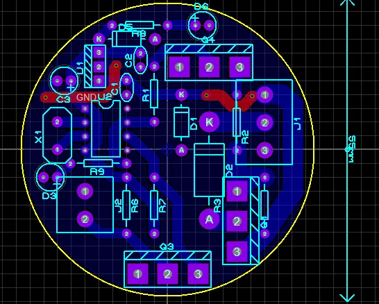

Para iglesias, marcas y redes
Diseño y video
- Diseño gráfico y branding
- Edición de video y motion graphics
- Animación 3D (Blender, Three.js)
- IA generativa: imagen, voz y video
Ingeniero electrónico · Desarrollador full-stack · Automatización con IA · Diseño y video
Hice sitios para clientes como Cox Automotive en CodeRoad y enseñé en la universidad. Hoy uno la ingeniería con el diseño: afiches, identidades, videos, sitios web y flujos con agentes de IA, cuidando que cada pieza se vea bien y funcione.


Mi trabajo
El diseño y la ingeniería se apoyan entre sí, pero cada uno tiene su propia página con proyectos reales. Entra por el que te interesa.
Para iglesias, marcas y redes
Para equipos y proyectos técnicos
¿Algo en los dos caminos? AI_design_7thday es software que diseña: skills de IA que hacen afiches del Ministerio Joven con los emblemas correctos. Ver el proyecto
Trayectoria
Empecé diseñando placas y sistemas electrónicos, después hice sitios para clientes internacionales y enseñé en la universidad. De ahí viene mi manera de trabajar: medir, probar y cuidar que cada parte encaje.
Universidad Mayor de San Andrés, La Paz, con mención en Sistemas de Computación.
En la pasantía diseñé y armé unos diez circuitos, del esquema a la placa: un tablero interactivo para enseñar electrónica y el control de una máquina prensadora de alimentos. Mi proyecto de grado fue un sistema de asistencia biométrico con IoT y su web de reportes para el Instituto de Electrónica Aplicada.



App web de código abierto para adoptar mascotas: base de datos, backend en PHP y MySQL y despliegue en la nube. Ver el código
Sitios y experiencias digitales automotrices para clientes como Cox Automotive: implementación, QA y validación de migraciones, y trato directo en inglés con los clientes. Reconocido como TechStar of the Month · Customer Success Legend en septiembre de 2025.
Arquitectura de Computadoras, Sistemas Digitales I y II y Bases de Datos I en la Universidad Adventista de Bolivia, con materiales por competencias e IA en clase. En 2024 terminé el Diplomado en Educación Superior Basada en Competencias.
Bootcamp de despliegue en la nube y de IA agéntica en CodeRoad, hackatones de IA agéntica, cursos de Anthropic (Model Context Protocol, Claude Code in Action) y de LangGraph.
Herramientas para el Ministerio Joven: un sistema para evaluar eventos y campamentos, flujos de agentes que diseñan afiches y una app para las unidades de Conquistadores. Además, mi estudio Kauxte y el canal Nativzar.
Guía Mayor investido en diciembre de 2025, director del Club de Conquistadores de 2020 a 2024 y director de Ministerio Joven en 2017.
Para diseñar interfaces con sistema antes de programarlas.
Contacto
Afiches, un video, un sitio web, una app o un flujo con agentes de IA. Cuéntame qué necesitas y te respondo con una propuesta clara.